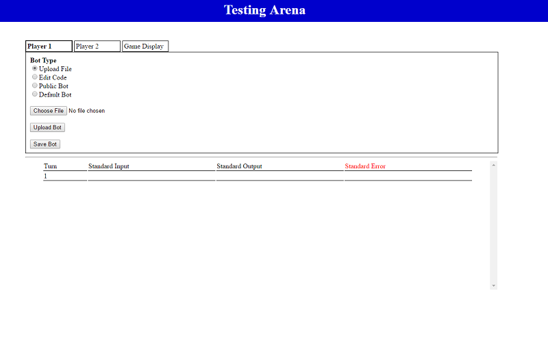
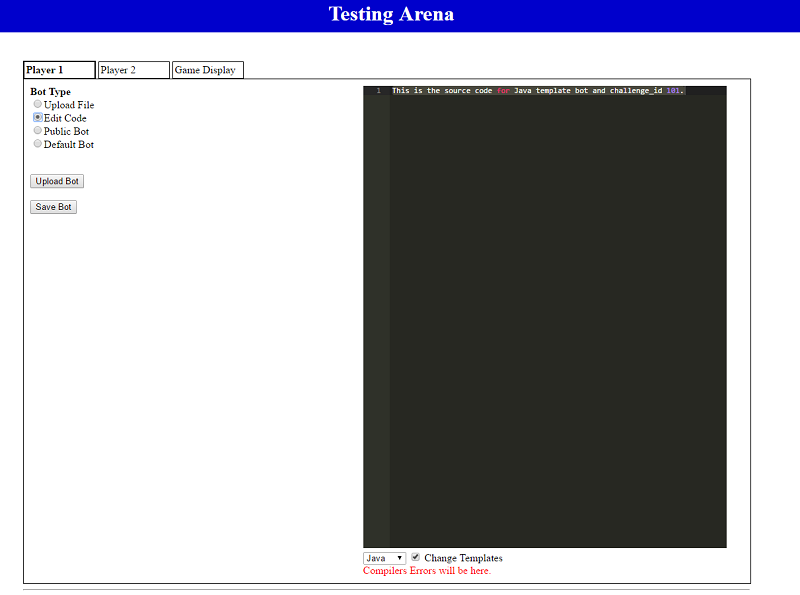
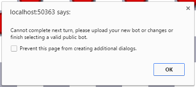
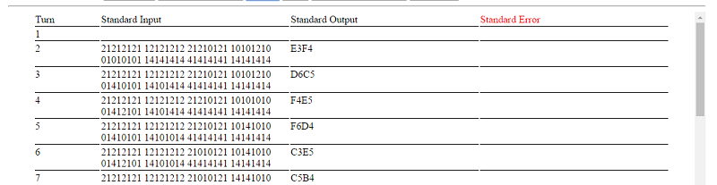

Bot!Battle!
Game Display JSON Format
Click here to see how to create the display for your new challenge!
How to use Testing Arena
This is the screen you'll see when entering Testing Arena.

It has has three tabs across the top - 'Player 1' 'Player 2' and 'Game Display'
'Player 1' will allow you to edit the bot settings for Player 1 in the game.
'Player 2' will allow you to edit the bot settings for Player 2 in the game.
'Game Display' will allow you to view the current state of the game.
Selecting a bot
You'll have four options to select a bot to use for your turn.
Selecting 'Upload Bot' will allow you to select your file through a file browser.
You may also edit your code through our in browser IDE.

Or you can enter the Bot ID of a public bot in the text box

When you are ready to perform a next move, navigate to the Game Display tab.

Click on the 'Next Turn' button
If you have uploaded (or selected) a valid bot to use the next turn will show up.
However, if there was an error with the bot, the following message will appear.

While testing your bots, there is information below that may be important to you including...
Standard Input - The data that is being passed to your bot
Standard Output - The output that a bot produced on a given turn
Standard Error - Anything that a bot wrote to standard error during a given turn
